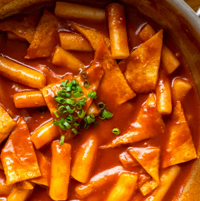

Tteokboki

Description
Tteokboki is the most classic Korean street food. It contains rice cakes, fish cakes, and vegatables drowned into a spicy sauce
Ingredients
- Anchivy stock
- Rice cakes
- Fish cakes
- Green onion
- Soy sauce
- Sugar
- Gochugaru
- Garlic
- Rice syrup
- Gochujang
Steps
- Put rice cakes into warm water for about 10 minutes
- Boil anchovy stock
- Add soften rice cakes, soy sauce, sugar, gochugaru, garlic, rice syrup, and gochujang
- Cook for about 10 minutes until sauce is reduced
- Add fish cakes and green onions and cook for 2 minutes